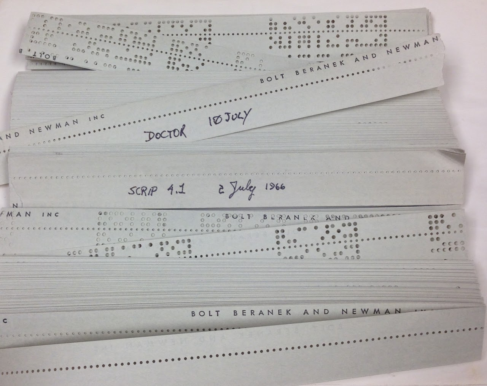
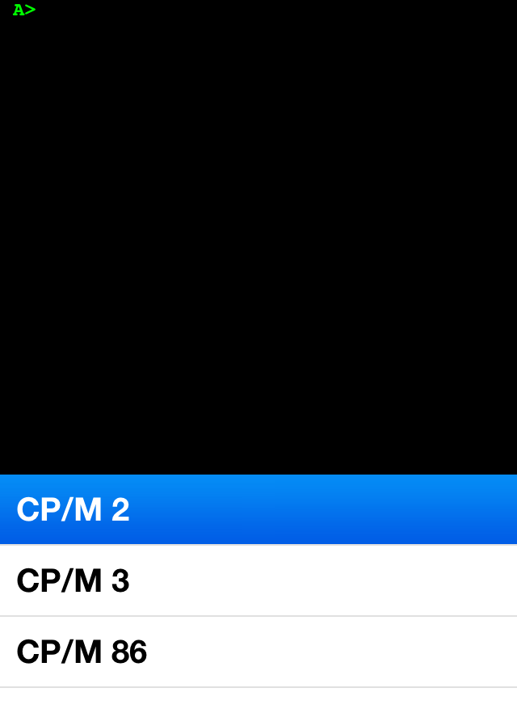
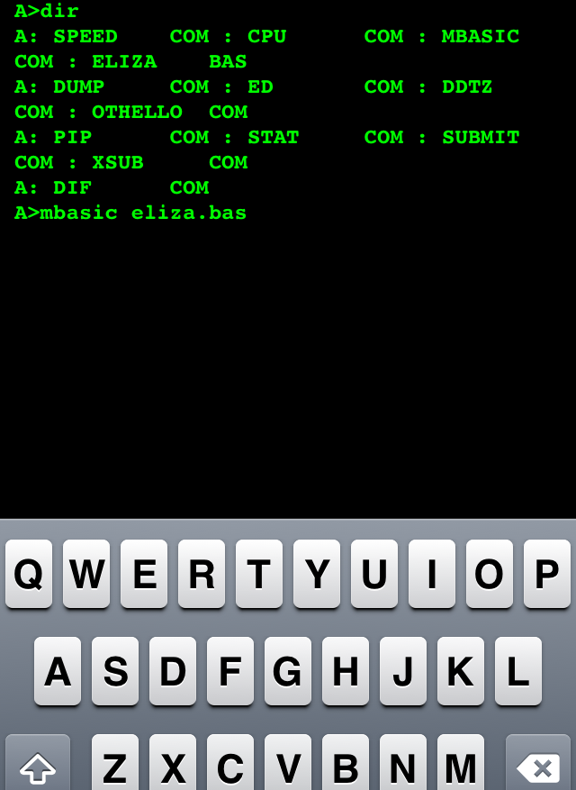
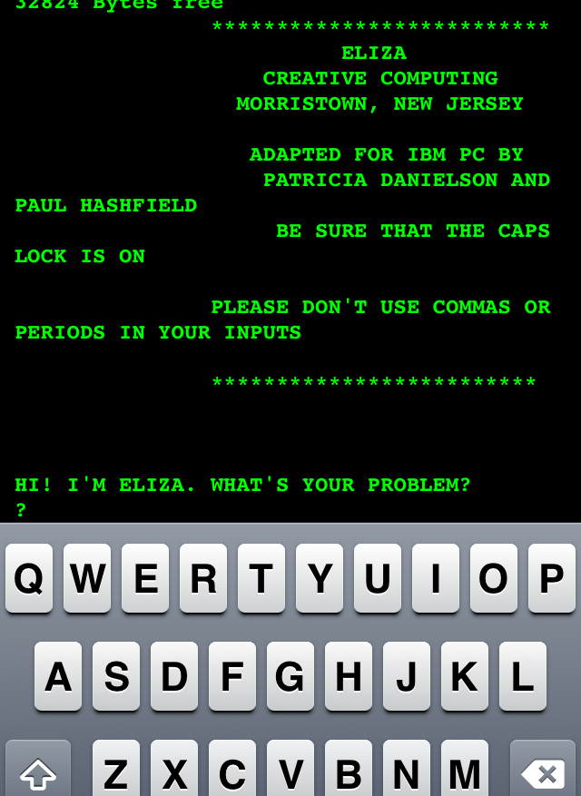
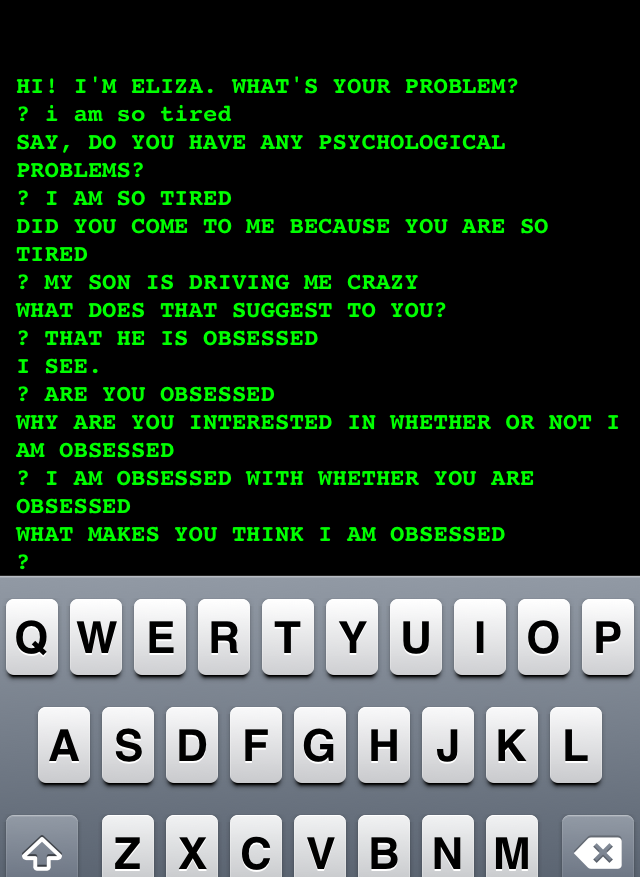

Commonly Known ELIZA Clones
Most people who know anything about Joseph Weizenbaum's ELIZA at the level of the program code think that it was written in Lisp and that it has been floating around since the publication of Weizenbaum's 1966 CACM paper. However, surprisingly, the ELIZA program itself was never published, and it wasn't written in Lisp, but in a now-obscure language called MAD-SLIP running on an IBM 7094 computer at MIT. Until recently, the ELIZA source code has been missing, presumed by many to be lost, and because many alternate versions have been created over the years, the original source code remained undiscovered. Some of these alternative versions are closely based on Weizenbaum's CACM paper, others are merely conceptually similar. This page lists some of the earliest and/or most commonly-known of those.
Bernie Cosell's Lisp Eliza @ BBN c. 1966-1972:
This is the original Lisp Eliza (aka. Doctor) program, written by Bernie Cosell based upon Joseph Weizenbaum's original work. Weizenbaum's wrote his program in SLIP, a long-dead Fortran-based symbolic computing package. Cosell, working at BBN, created this BBN Lisp version from Weizenbaum's paper, not from the SLIP code. Nevertheless, as SLIP never saw the popularity of Lisp, this is the version of Eliza that most folks have used, and from which most lisp-based Elizas derive. (A separate BASIC fork, not based upon either the Lisp or SLIP versions, was popular on early PCs. See below.)
Bernie writes: "I *never* saw any of the SLIP code and knew nothing about it. I wrote Doctor *completely* working just from the CACM article! In fact, if the SLIP code actually surfaced, it'd be interesting to see how different/similar ours were, since I [really] never saw any of Weizenbaum's code. Truth is that I did Doctor as a learning hack. Dan Murphy was [and still is] a good friend of mine from MIT and he was working on bringing up Lisp on the PDP-1b in the other building at BBN while I was system-czar for the Hospital Timesharing system on our PDP-1d. I knew a little Lisp from a course at MIT, but I figured that the best way to really "get" Lisp was to write something real. I had just joined the ACM [I started at BBN in the fall of '65] and I think Weizenbaum's Eliza article just happened to be in the very first copy of Communications that I received."
This release include high resolution TIFF scans of printouts of Bernie's code, including the Lisp code and scripts. from 1969 and 1972. He also provided a paper tape version from 1966, which I am in the process of reading, and will make public soon. The release also includes combined OCRed PDFs of each program and script. The OCR is not very accurate. I intend to release perfect transcripts as well as Modern Lisp macros that make this work.
Eliza/Doctor in Lisp by Bernie Cosell
Licensed under a Creative Commons Attribution-ShareAlike 3.0 Unported License.
[20131112] 600dpi scans of 1969 and 1972 printouts combined into PDFs and (roughly) OCR'ed
IT WORKS!
We have made the 1969 version of Eliza (aka. Doctor) work on modern Common Lisp, having to change almost nothing in the raw code transcripts! Here is the GitHub repo containing the code. (The file you're probably going to be most interested in is: "1966_Cosell_BBNLISP/coselleliza1969and1972.lisp".)
Thanks to the following folks who helped transcribe the code from the original printouts: eMBee, Dave Cooper, Bob Felts, Saul Good, Ben Hyde, Simon Leinen, Patrick May, Charlie McMackin, Paul Nathan, Matt Niemeir, Peter De Wachter, Thomas Russ, Patrick Stein, and Jeff Shrager. And these folks made it work in modern CL Peter De Wachter, Matt Niemeir, and Jeff Shrager. If you want to become a github collaborator and work hands-on this project, write Jeff Shrager (jshrager@gmail.com)
Thanks to Peter Seibel for making the original connection to Bernie.
James Markevitch has read and translated the 1966 version of Eliza in BBN lisp, and has created an emulator (in PERL!) for it that results in a working version! It's all available on the github site in the "1966_Cosell_BBNLISP/ptape/" folder.

Jeff Shrager's BASIC Eliza, c. 1973 (pub. 1977)
Jeff Shrager created a BASIC version of Eliza in 1973 that appeared in Creative Computing in the July/August issue of 1977:
[1977 BASIC Eliza in Creative Computing]
Shrager actually wrote it in 1973. Although he recalls having seen a copy of the Lisp code much later, his BASIC Eliza was written well before this, and was, to use his own words: "conceptual, and pretty poor." Regardless, 1977 was around the dawning of the era of the personal computer (the Commodore PET, Apple ][, and TRS-80 were all introduced in that year!), and although few folks in the hobbyist community knew Lisp, lots of them knew Basic, so Shrager's Eliza was widely circulated and many knock-offs appeared in many other languages, some as late as this year. Shrager's version has even apparently been translated back into Lisp a number of times. Indeed, there are so many near-and-distant knock-offs of this program floating around that it would be pointless to try to assign any sort of Creative Commons, or otherwise, license to it.
The version published in CC in 1977 was under CC editor Steve North's byline, but Shrager is correctly attributed as the author in the comments. In April of 2026 Shrager provided a recollection of his creation of this ELIZA to Dr. Dr. Stefan Höltgen, of The University of Bonn.
This alternative publication:
[1984 BASIC Eliza in Big Computer Games]
gives the correct year of creation of the program as 1973.
Note that North's text incorrectly attributes the Lisp Eliza to Joseph Weizenbaum, whereas it was actually written by Bernie Cosell (see above). This was, and continues to be, a common mistake, possibly promulgated by Shrager at the time, rather than North.
If you have an iPhone or iPad and are seeking immediate Eliza gratification, check out "iAltair", a MITS Altair 8800 CP/M simulator that comes with a copy of ELIZA.BAS, adapted directly from the Creative Computing version.
Check it out:




On July 8, 2022 David Ahl wrote the following to Jeff Shrager (lightly edited for clarity):
Subject: Re: ELIZA (Doctor) from 1977 CC
[A]fter Eliza was published in Creative Computing in 1977, we reprinted it in my second games book, "More Basic Computer Games" first published in June 1979. Between the magazine and book sales, that put about a quarter million copies of Eliza in people's hands. My games books were translated into Japanese, German, Dutch, and some other languages, which really spread it out. Not long after Eliza's appearance (as was true with most of our "interesting" programs) we started getting requests to convert it to other versions of BASIC and also to other languages. I routinely approved these requests (which hopefully didn't violate too many copyrights) and after Ziff-Davis shuttered the magazine in December 1985, I put everything we had published plus all of my future books and articles in the public domain. My whole vision then and now was to improve and expand education in any way I can."
GNU EMACS "Doctor"
GNU EMACS has included a built-in "Doctor" since about 1985. It claims to use techniques "similar to the classic Eliza", but does not say whether it is based upon Cosell's Lisp code or Weizenbaum's paper. Lars Brinkhoff, who has collected historical Emacs versions, notes that "Doctor" was not present in GNU Emacs 16.60 from July 1985, but is there in Emacs 17.61 from April 1986, and that it says: "Copyright (C) 1985 Sidney Markowitz and Richard M. Stallman". Although it is unknown whether the author(s) actually saw Cosell's version, it's pretty likely that they did, being Lisp hackers at MIT around the time that the Lisp ELIZA would have been making the rounds.
It begins:
;;; doctor.el --- psychological help for frustrated users
;; Copyright (C) 1985, 1987, 1994, 1996, 2000-2013 Free Software
;; Foundation, Inc.
;; Maintainer: FSF
;; Keywords: games
...
;;; Commentary:
;; The single entry point `doctor', simulates a Rogerian analyst using
;; phrase-production techniques similar to the classic ELIZA demonstration
;; of pseudo-AI.
Here is the current version: http://git.savannah.gnu.org/cgit/emacs.git/tree/lisp/play/doctor.el
Peter Norvig's PAIP ELIZAs
In Paradigms of AI Programming, Peter Norvig provides several simple versions of ELIZA, similar to Bernie Cosell's version (see above).